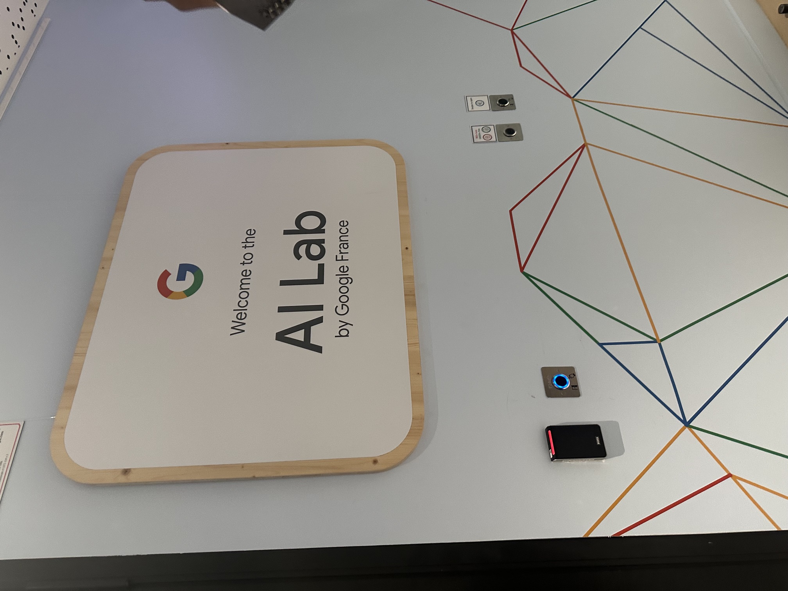
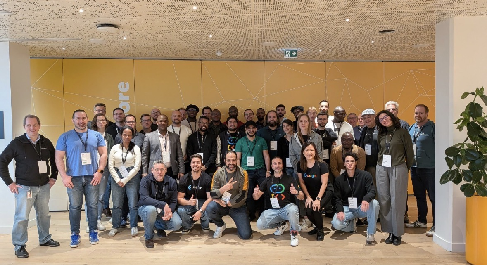
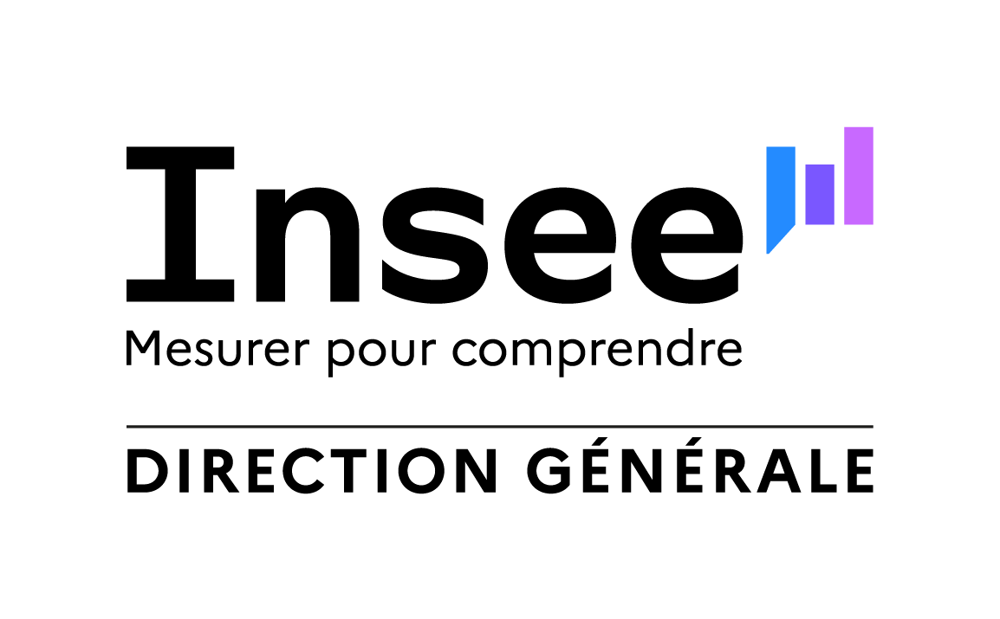
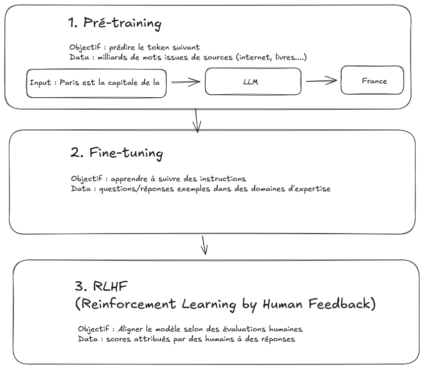
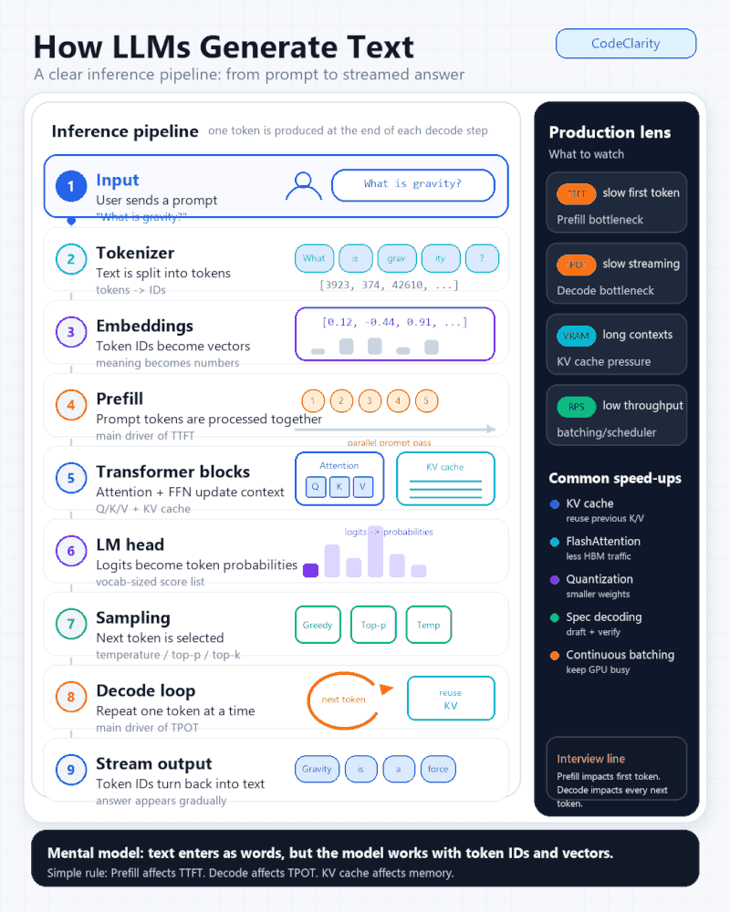
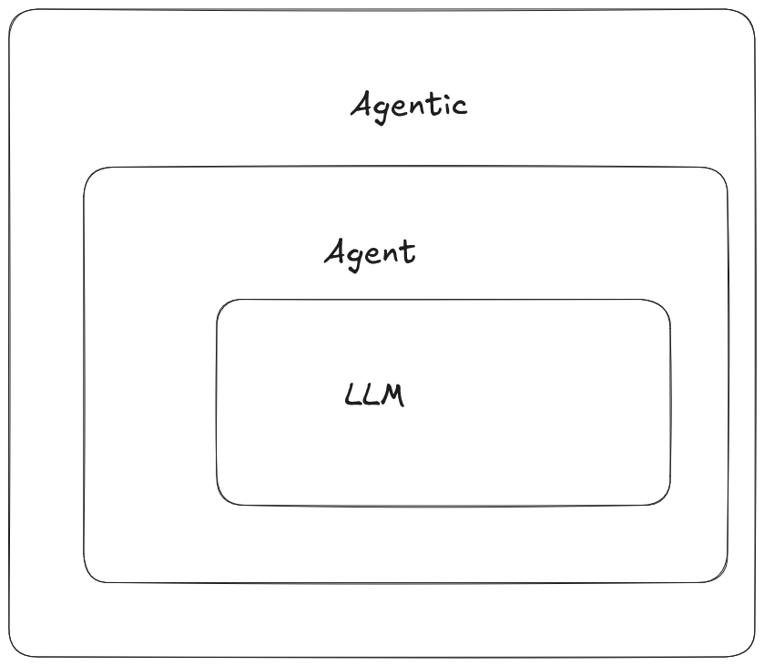

IA Générative
Une introduction aux LLMs, agents et autres
06/09/2026
Sommaire
1 Pourquoi et comment a été construite cette introduction
1.1 Principaux éléments
L’IA générative transforme de nombreux aspects en générale mais ma manière de travailler en particulier :
- 2022 : arrivée de ChatGPT –> depuis on ne parle pas seulement de LLMs mais d’agents, MCP, MCP-apps, Skills etc…
- comprendre clairement de quoi on parlait
- questions d’utilisation à des fins professionnelles (pas simplement pour résumer du texte)
- savoir utiliser (ce qu’on peut faire / ce qu’on ne peut pas faire)
1.2 Principaux éléments
- Premières questions :
- utiliser LLMs (souveraineté)
- créer un agent
- savoir déployer un agent en production
- trouver les cas d’usages
L’objectif ce cette mini introduction : comprendre basiquement ce qu’est un LLM / clarifier les autres termes .
1.3 Utiliser l’IA Générative
- Impact de l’utilisation de l’IA dans tous les métiers (Marketing, developpeurs ….)
- Apparition de nouveaux acteurs (
OpenAI,Anthropic…)
- Apparition de nouveaux termes (
Vibe Coding)
- Appartion de nouveaux outils (
Cursor,OpenClaw,Claude Code,Antigravity CLI)
1.4 Les ressources
Comprendre ce qu’est un LLM : Build a Large Language Model (From Scratch) from Sebastian Raschka
Cours “Build AI agent in production”, Certifications
- Prompt engineering
- Construire un agent
Chaîne YouTube Standford Online
- En particulier le cours CS229 - Machine Learning | Building Large Language Models (LLMs)
1.5 Les ressources
- Une formation de formateurs chez Google
 |
 |
1.6 Les ressources
2 Principes généraux LLMs

2.1 Vidéo générée (Google Veo)
2.2 Comment est construit un LLM ?
2.3 Etapes

2.4 Build an LLM

3 Agent / agentic
3.1 Agent IA
3.2 A retenir

3.3 Et le RAG ?
4 Gestion des backlogs des applications au DVDSG
4.1 Un ou des agents ?
- Marylène Henry
- marylene.henry@insee.fr